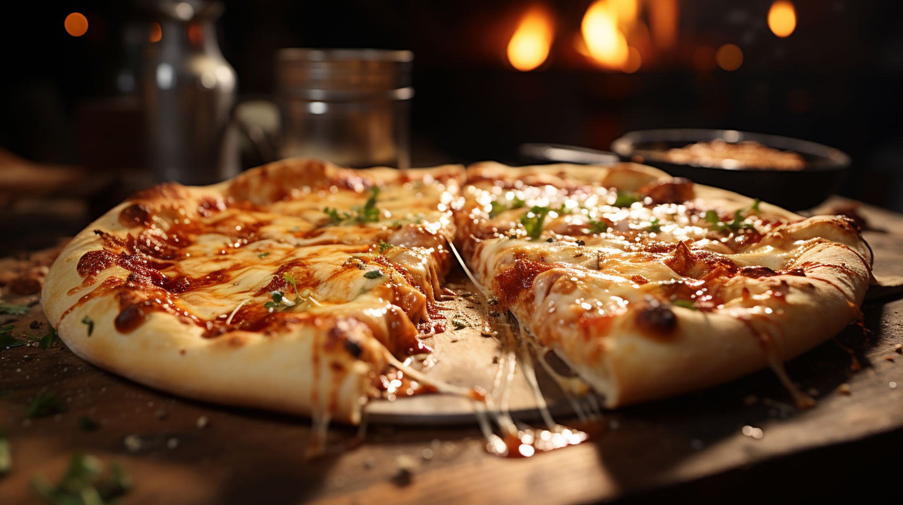

Pizza

Un clasico italiano, perfecta para todos los findes.
Ingredientes
- Harina
- Agua
- Levadura
- Azucar
- Sal
- Muzzarella
- Salsa de tomate
- Oregano
Pasos
- Levadura a 500ml de agua tibia con cucharada de azucar
- 1Kg de harina 000 al bol para pizzas
- Cuando se activen las levaduras tirarlo al bol y amasar
- Amasar hasta formar bollo heterogeneo
- Dividir a la mitad el bollo y dejar levar media hora
- Volver a dividir a la mitad los bollos, dejar levar 10-15 min
- Estirar las pizzas en sus fuentes y echarlas al horno despues de ponerle la salsa de tomate
- Agregar muzzarella cuando la masa deje de ser gomosa y retirarlas una vez burbujee el queso
Home